Delphi Connectors (Micro .64)
Delphi Connectors (Micro .64)
Tools Required
J-38125 Terminal Repair Kit
Removal Procedure
Follow the steps below in order to remove terminals from Micro .64 connectors.
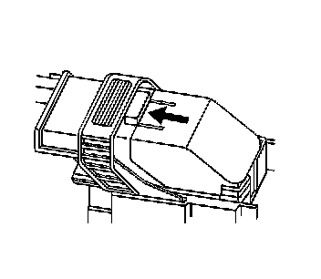
1. Locate the lever lock on the wire dress cover. While depressing the lock, pull the lever over and past the lock. The lever lock may be located on the top or sides of the wire dress cover.
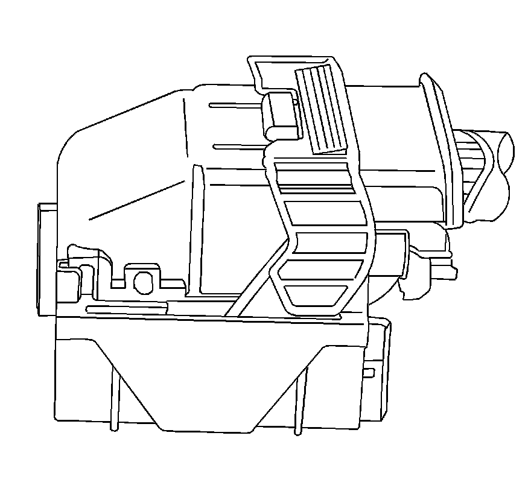
View of a typical Micro 64 connector.
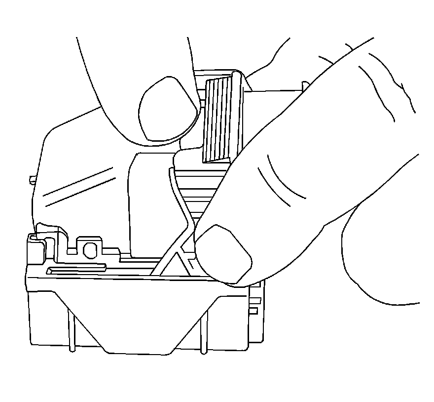
Depress the lock and pull the lever over and past the lock.
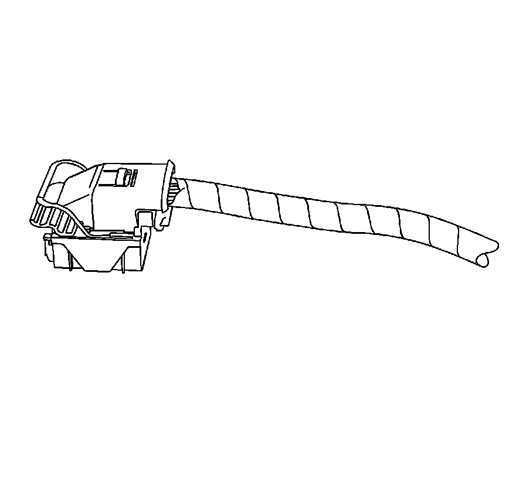
View of the connector when released from the component.
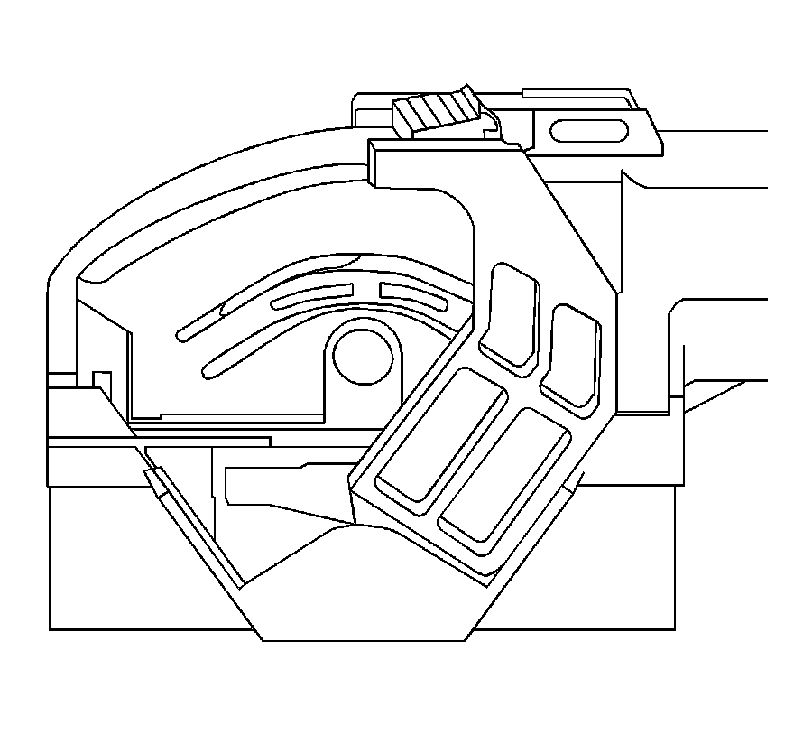
View of another type of Micro 64 connector.
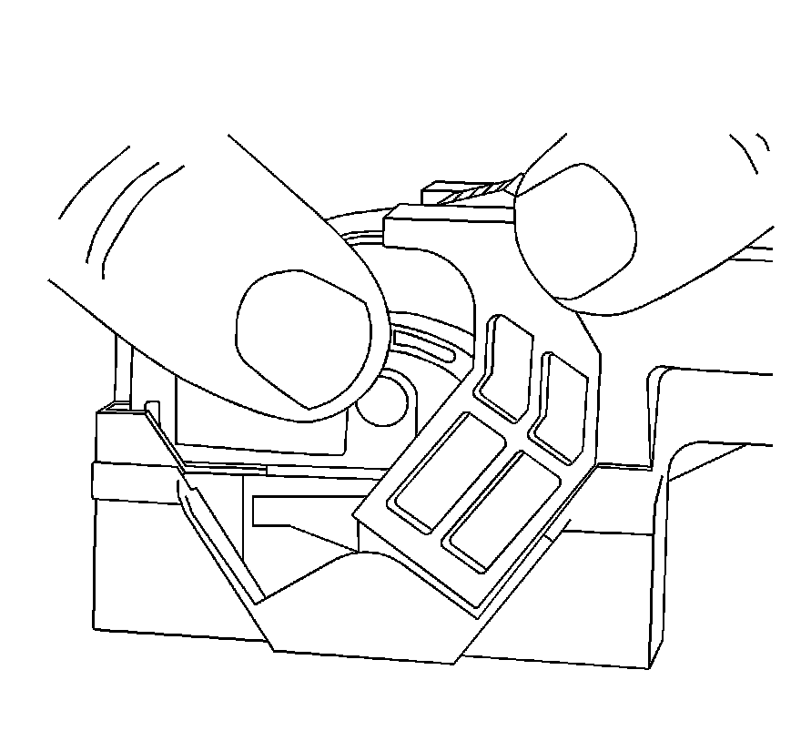
Depress the locks that are located on both sides of the wiredress cover and pull the lever over and past the locks.
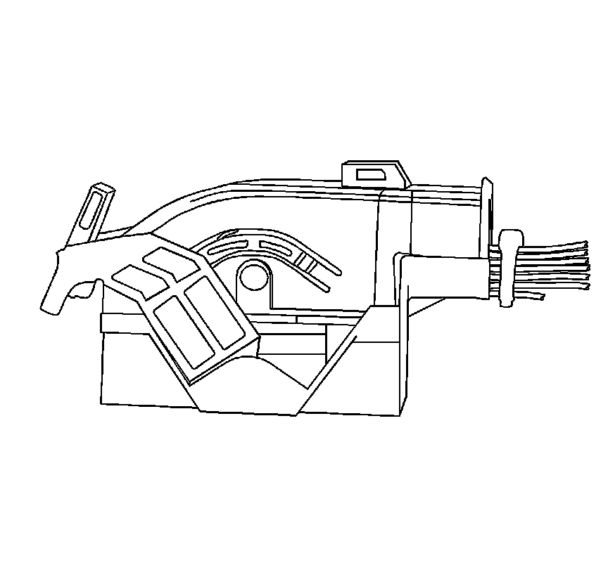
View of the connector when released from the component.
2. Disconnect the connector from the component.
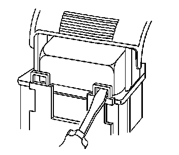
3. Locate the dress cover locking tabs at the front of the connector. Using a small flat-blade tool push down on one of the locking tabs and pull the cover up until the dress cover releases. Repeat this procedure for the other locking tab.
4. Once the front 2 locks are unlocked, lift the front of the dress cover and pull it forward.

Important: Always use care when removing a terminal position assurance (TPA) in order to avoid damaging it.
5. Remove the TPA by inserting a small flat-blade tool into the small slot on the TPA and pushing down until the TPA releases. Gently pry the TPA out of the connector.
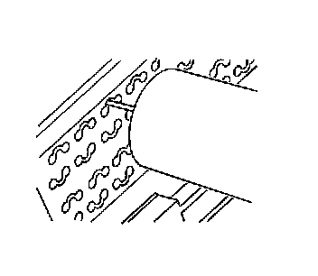
Important: Be careful not to angle or rock the J 38125-21 tool when inserting it into the connector or the tool may break.
6. Insert the J 38125-21 (GM P/N 15381651-2) tool into the round canal between the terminals cavities at the front of the connector. See the release tool cross reference in the Reference Guide of the J-38125 to ensure that the correct release tool is used.
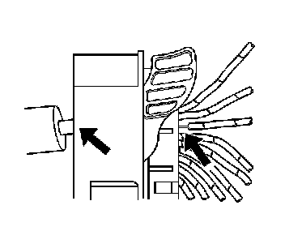
7. While holding the removal tool in place, gently pull the wire out of the back of the connector. Always remember never use force when pulling a terminal out of a connector.
Repair Procedure
Follow the steps below in order to repair Micro 64 connector terminals.
The Micro 64 connectors have small terminals that are difficult to handle and hold when crimping. In order to aid the technician when crimping these terminals, a new crimping tool was developed. The J 38125-64 (M jaw) was developed to crimp Micro 64 terminals. The J 38125-64 crimping tool has a terminal holding block that will hold the terminal in place while the terminal is being crimped. The J 38125-64 crimping tool is also designed to crimp both the wire and the insulation at the same time.
After the terminal is removed from the connector perform the following procedure in order to repair Micro 64 terminals.
Important: After cutting the damaged terminal from the wire, determine if the remaining wire is long enough to reach the connector without putting a strain on the wire. If the wire is not long enough, splice a small length of the same gage wire to the existing wire, then crimp the new terminal on the added wire.
1. Cut the wire as close to the damaged terminal as possible.
2. Strip 5 mm (3/16 in) of insulation from the wire.
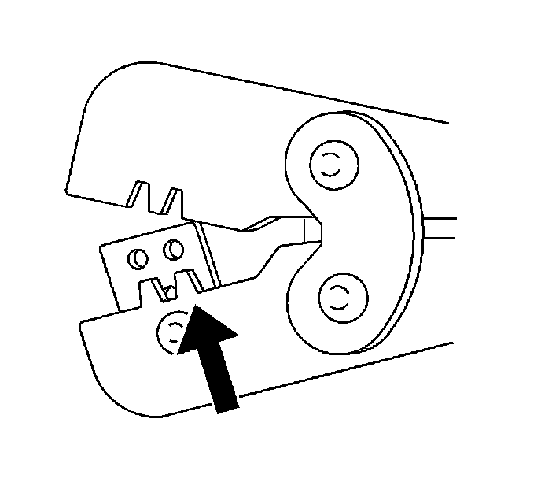
3. Depress the spring loaded locator of the crimping tool until the terminal holder is completely visible.
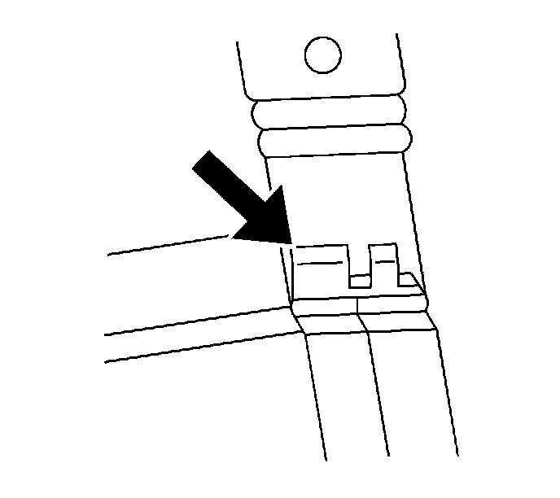
4. Insert terminal into the appropriate terminal holder until it hits bottom and stops. The correct terminal holder is determined by the wire size. Also ensure that the terminals wings are pointing towards the former on the tool and the release locator.
5. Insert the stripped cable into the terminal. Insulation should be visible on both sides of the terminal insulation wings.
6. Compress the handles until the ratchet automatically releases.
7. Place the terminal into the appropriate cavity and assemble the connector.